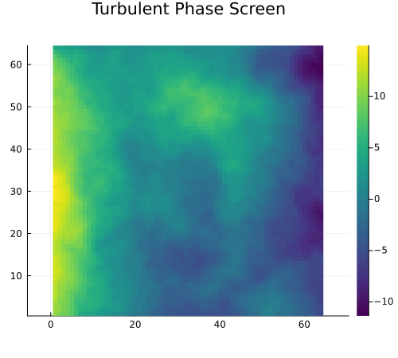
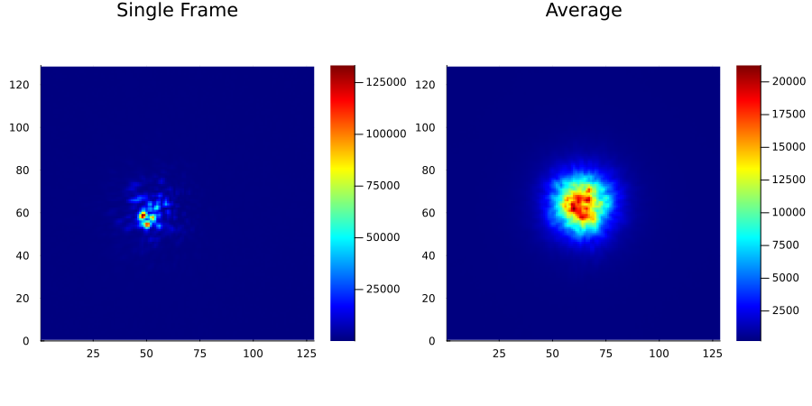
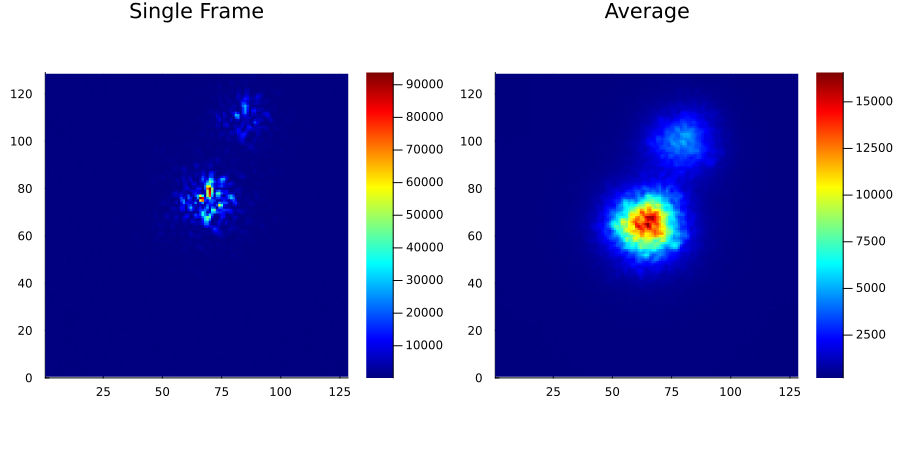
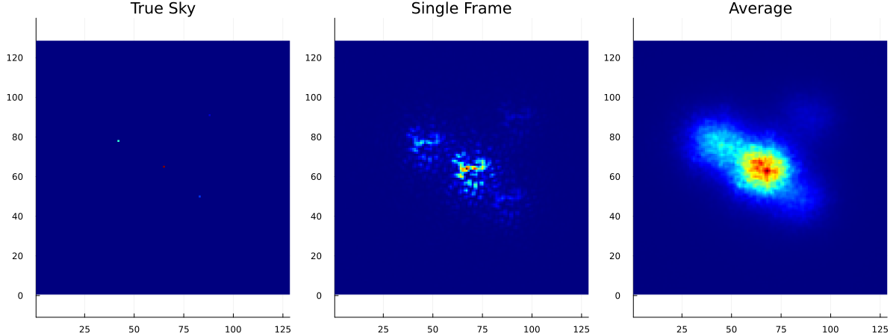
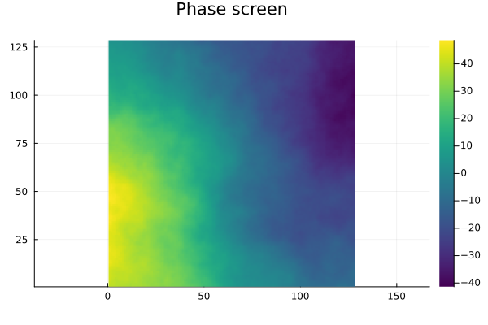
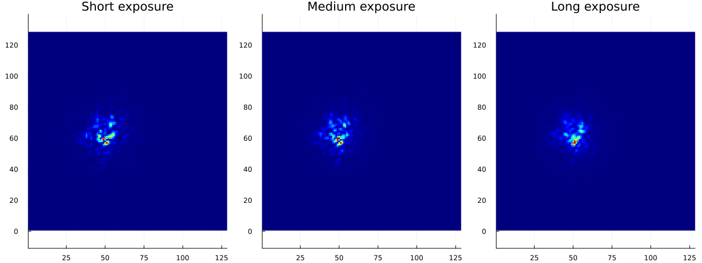

Examples
This page collects runnable examples for common simulation workflows. The examples use small grids and short sequences so they can run quickly in documentation builds; increase n, grid size, or batch size for production runs.
Phase Screen Generation
Create a SingleLayer atmosphere by specifying the Fried parameter $r_0$ in pixels. For a 2 m telescope represented on a 64 pixel pupil grid, $r_0 = 0.2$ m corresponds to:
using AtmosphericTurbulenceSimulator
atm = SingleLayer(0.2 / 2 * 64; interpolate=:auto)Generate phase screens by passing the atmosphere model and desired plate size to simulate_phases:
using Plots
phases = simulate_phases(atm, (64, 64); n=1, verbose=false)
heatmap(
phases[:, :, 1],
colorbar=true,
colormap=:viridis,
aspect_ratio=:equal,
title="Turbulent Phase Screen",
size=(500, 450),
)
To write phase screens to HDF5, pass a file name or HDF5File:
simulate_phases(atm, (64, 64); n=3000, file="phases.h5")Point-Source Imaging
An imaging simulation needs an aperture, photon budget, atmosphere, and true-sky model.
using AtmosphericTurbulenceSimulator
aperture = CircularAperture((64, 64), 30)
img_spec = ImagingSpec(
aperture,
PhotonCount(1e7, 200);
filter=FilterSpec(550, bandwidth=40),
)
atm = SingleLayer(0.2 / 2 * 64; interpolate=:auto)Run the simulation in memory by leaving file=nothing, which is the default:
using Plots, Statistics
result = simulate_images(atm, img_spec; n=128, savephases=false, verbose=false)
images = result.images
p1 = heatmap(images[:, :, 1], title="Single Frame", cmap=:jet, aspect_ratio=:equal)
p2 = heatmap(
mean(images, dims=3)[:, :, 1],
title="Average",
cmap=:jet,
aspect_ratio=:equal,
)
plot(p1, p2, layout=(1, 2), size=(900, 450))
Binary Systems
Use DoubleSystem to model a primary source plus a secondary source. The relative position is specified in image pixels, and the intensity is relative to the primary.
using AtmosphericTurbulenceSimulator
using Plots, Statistics
aperture = CircularAperture((64, 64), 30)
img_spec = ImagingSpec(aperture, PhotonCount(1e7, 200))
atm = SingleLayer(0.2 / 2 * 64; interpolate=:auto)
sky = DoubleSystem((35, 15), 0.3)
images = simulate_images(sky, atm, img_spec; n=128, savephases=false, verbose=false).images
p1 = heatmap(images[:, :, 1], title="Single Frame", cmap=:jet, aspect_ratio=:equal)
p2 = heatmap(
mean(images, dims=3)[:, :, 1],
title="Average",
cmap=:jet,
aspect_ratio=:equal
)
plot(p1, p2, layout=(1, 2), size=(900, 450))
Extended True-Sky Images
Use TrueSkyImage for arbitrary extended brightness distributions. The input image must match the final imaging grid size, not the aperture size.
using AtmosphericTurbulenceSimulator
using Plots, Statistics
aperture = CircularAperture((64, 64), 30)
img_spec = ImagingSpec(aperture, PhotonCount(1e7, 200); img_size=(128, 128))
atm = SingleLayer(0.2 / 2 * 64; interpolate=:auto)
true_sky = zeros(Float32, 128, 128)
true_sky[65, 65] = 1
true_sky[50, 83] = 0.18
true_sky[78, 42] = 0.42
true_sky[91, 88] = 0.08
sky = TrueSkyImage(true_sky)
images = simulate_images(sky, atm, img_spec; n=128, savephases=false, verbose=false).images
hmap_kws = (; colormap=:jet, aspect_ratio=:equal, cbar=false)
p1 = heatmap(true_sky; title="True Sky", hmap_kws...)
p2 = heatmap(images[:, :, 1]; title="Single Frame", hmap_kws...)
p3 = heatmap(mean(images, dims=3)[:, :, 1]; title="Average", hmap_kws...)
plot(p1, p2, p3, layout=(1, 3), size=(1200, 450))
Variable exposure times
To simulate long exposure times, you need non-zero wind velocity and non-zero exposure time. This can be done by setting the wind_velocity keyword argument of the atmosphere spec (e.g. SingleLayer) and the exposure field of the ImagingSpec.
In this example we will combine the variable exposure with the SavedPhases atmosphere spec, which replays a sequence of phase screens from an array. First, let us generate a random phase screen:
using AtmosphericTurbulenceSimulator, Plots
atm = SingleLayer(0.2 / 2 * 64, interpolate=:auto) # r0 = 0.2 m on a 2-m 64-pixel grid
phases = simulate_phases(atm, (128, 128); n=1, verbose=false) # padding to make long exposure available
heatmap(phases[:, :, 1], title="Phase screen", colormap=:viridis, aspect_ratio=:equal)
After that we will run several simulations with increasing exposure time, using the same phase screen. The phase screen will be automatically cropped to the plate size of the imaging spec, and shifted according to the wind velocity and exposure time.
atm_saved = SavedPhases(phases; wind_velocity=(1, 1)) # wind velocity 1.41 pixel / time unit
ap = CircularAperture((64, 64), 30)
img_short = simulate_images(atm_saved, ImagingSpec(ap, PhotonCount(Inf)); n=1).images[:, :, 1]
img_medium = simulate_images(atm_saved,
ImagingSpec(ap, PhotonCount(Inf), exposure=Exposure(10, 10)); n=1).images[:, :, 1] # vt = 14.1 pixels = 0.44 m
img_long = simulate_images(atm_saved,
ImagingSpec(ap, PhotonCount(Inf), exposure=Exposure(50, 10)); n=1).images[:, :, 1] # vt = 70.7 pixels = 2.2 m
hmap_kws = (; colormap=:jet, aspect_ratio=:equal, cbar=false, clims=(0, maximum(img_short)))
p1 = heatmap(img_short; title="Short exposure", hmap_kws...)
p2 = heatmap(img_medium; title="Medium exposure", hmap_kws...)
p3 = heatmap(img_long; title="Long exposure", hmap_kws...)
plot(p1, p2, p3, layout=(1, 3), size=(1200, 450))
HDF5 Output
For large runs, write directly to HDF5 instead of holding all frames in memory:
using AtmosphericTurbulenceSimulator
using HDF5
aperture = CircularAperture((64, 64), 30)
img_spec = ImagingSpec(aperture, PhotonCount(1e7, 200))
atm1 = SingleLayer(0.1 / 2 * 64; interpolate=:auto)
atm2 = SingleLayer(0.4 / 2 * 64; interpolate=:auto)
simulate_images(atm1, img_spec; n=16, verbose=false, file=HDF5File("images.h5", group="bad_seeing"))
simulate_images(atm2, img_spec; n=16, verbose=false, file=HDF5File("images.h5", group="good_seeing"))
h5open("images.h5", "r") do h5 # display the file structure
show(stdout, "text/plain", h5)
end🗂️ HDF5.File: (read-only) images.h5
├─ 📂 bad_seeing
│ ├─ 🔢 images
│ └─ 🔢 phases
└─ 📂 good_seeing
├─ 🔢 images
└─ 🔢 phasesWe wrote two simulation runs to the same file under different groups. Each group contains two datasets:
"images": simulated images with shape(Nx, Ny, n)."phases": phase screens with shape(Px, Py, n), whensavephases=true.
Set savephases=false to reduce disk use when only images are needed.